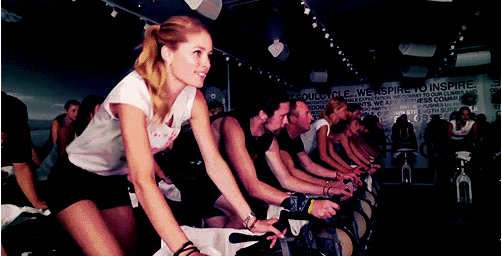
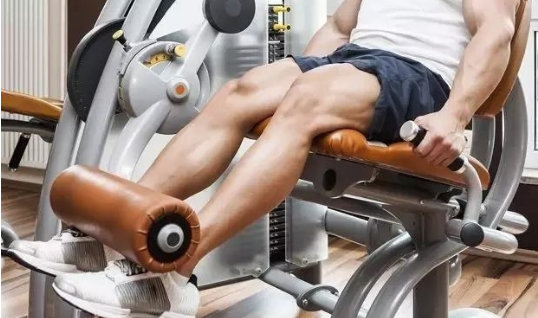
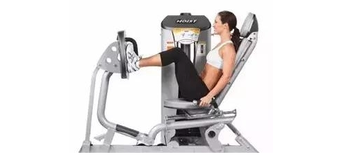
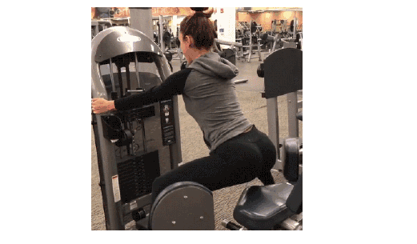

第一次去健身房的新手小白攻略！纯干货
求助！只认识跑步机的健身菜鸟，怎么才能第一天去健身房不被嚯嚯哈嘿练的肌肉男吓到， 不被香汗淋漓的美女们鄙视呢？！
听说很多人第一次去健身房，不是瞎练一通就是羞涩的跑走。
今天就说说第一次去健身房到底要练什么？怎么练！
菜鸟去健身房练什么
菜鸟只所以叫菜鸟，是因为不认识器械，不知道技术，没有力量。
那么可以先做有氧运动，去跑步机上跑跑步，记得热身哦！有人会说了，既然到健身房只是跑 步的话，自己也可以到外面夜跑啊，小风吹着多惬意！这里科普一个小常识，体脂高、体重基数大、 没有运动习惯的亲，要跑步最好是在跑步机上跑步。简单来说，就是胖子跑步特外伤膝盖，跑步机 可以缓冲减震！
错误示范↑
如果看到美女在运动，不要恬不知耻的一直围观或者不停搭讪！乖乖在后面排队等位，或者等 运动完再出手，当然如果你帅的话当我没说！
除了跑步机，你还可以去跳操、瑜伽什么的，很多亲们觉得动感单车很带感，运动难度不高，而且 减脂效果奇佳，非常适合新手，但是请不要久骑。图上还是错误示范，这种花式单车的骑法，非常 伤膝盖和腰椎。而RPM课程这种高冷的方法又需要专业指导，很明显不适合新手。
那么有氧练完了，练无氧就需要上器械了！上手快、难度小、强度低的器械有哪些呢？！练胸的除了 卧推哑铃、杠铃之外，入门级的还是以坐姿为主的器械，有推胸的有夹胸的，而且还可以练手臂。
夹胸
练完胸还可以练背，练背方式有很多，引体向上、杠铃然而难度太高。所以还是以坐姿为主，可以练坐 姿下拉和坐姿划船，当然也可以练手臂，对肩周炎非常有疗效。
练了胸和背，那么接着练练腿!练腿的器械不用说，大多都是坐姿了，有蹬腿的、有外展和内展的，还有屈伸的。
蹬腿
内展
无氧运动一次一般在45分钟左右，所以如果连完这几个部位还有那么一点时间和气力，可以用一下史密斯机练一下深蹲或者硬拉。 史密斯机的杠铃是有轨道的，所以是有安全防护的，新手可以试试感觉。
硬拉
深蹲
如果第一次到健身房，先从今天介绍的这些固定器械开始练习吧！他们有固定的轨道，非常安全，而且可以帮助我们找到肌肉正确发 力的感觉，非常适合新入健身房的小白们。
妈妈再也不用担心我去健身房丢脸加浪费钱啦！